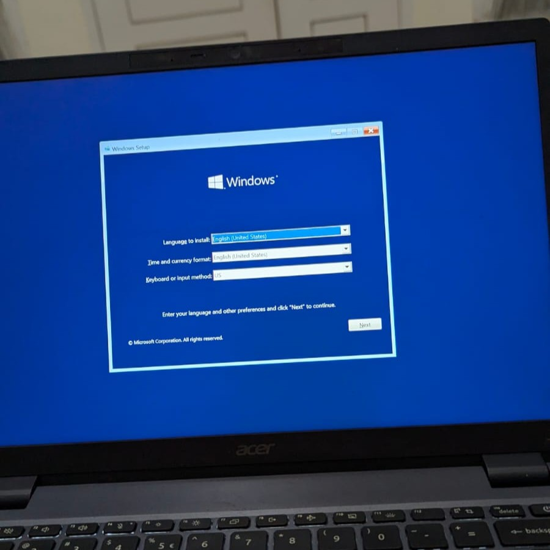
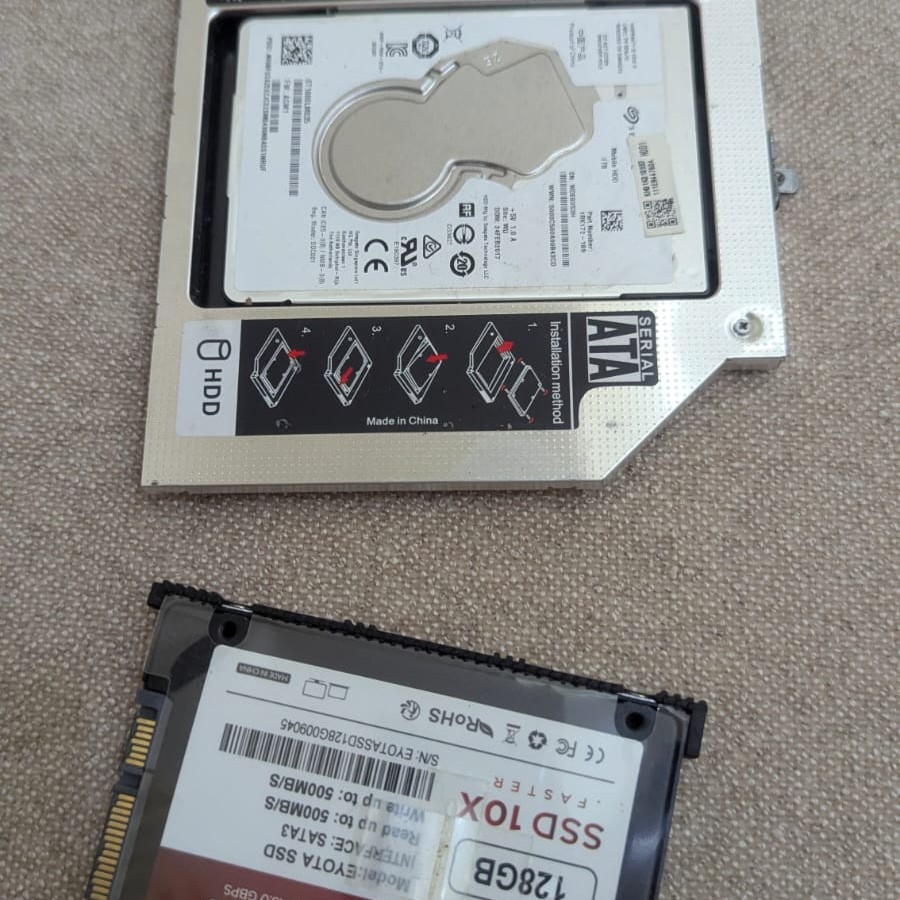
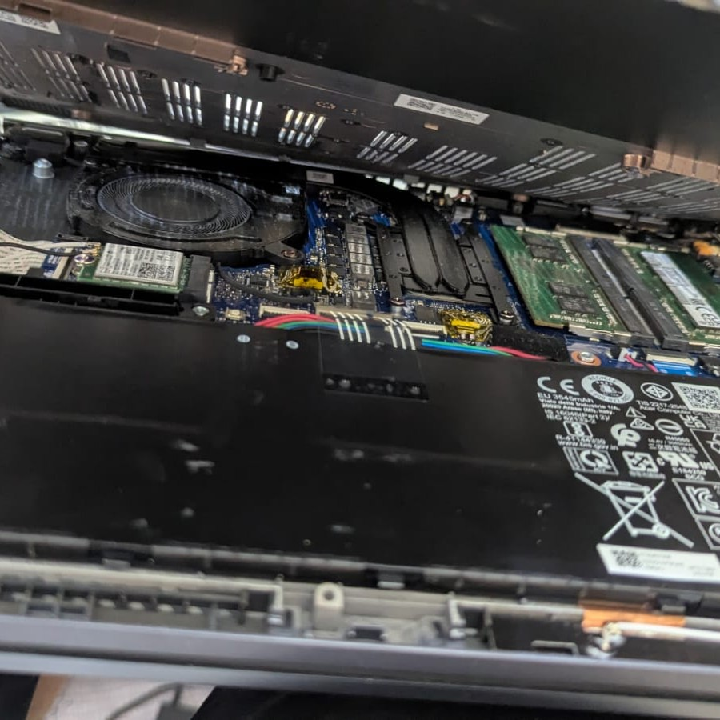
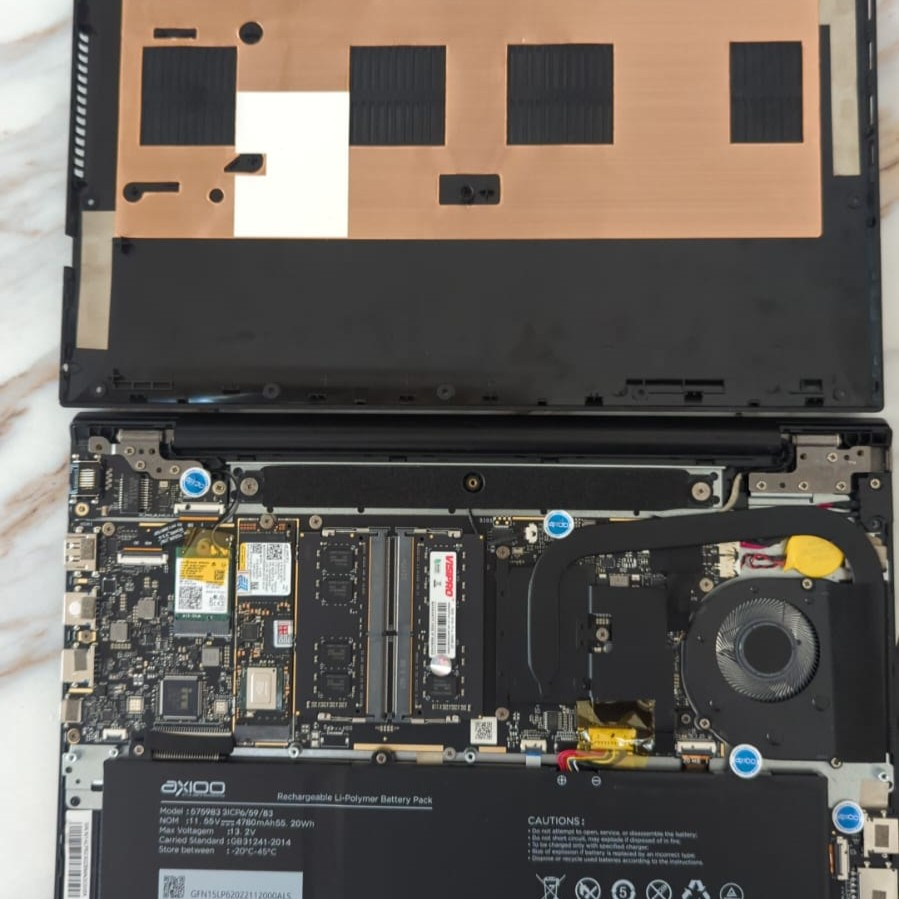
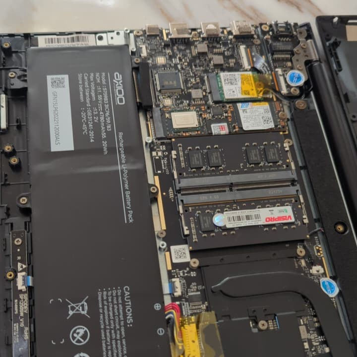

Melayani install OS, upgrade SSD/RAM, pembersihan total, hingga perbaikan hardware dengan teknisi berpengalaman.
Apapun kendala perangkat Anda, kami siap mengembalikannya ke performa terbaik.
Transparansi dan kualitas adalah prioritas kami.





Ulasan real-time pelanggan kami via Google.